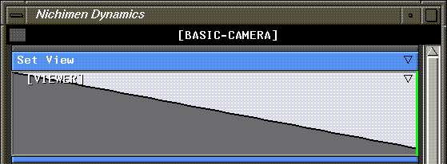
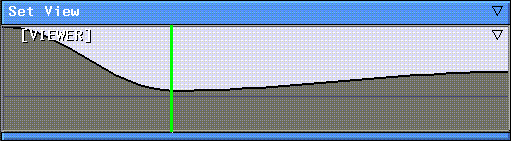
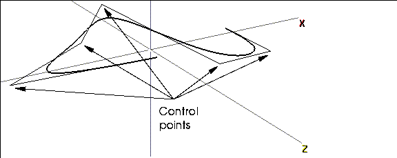
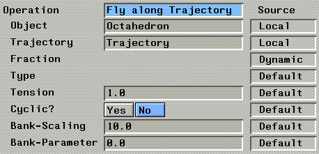
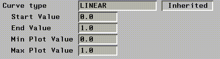

[N-World Contents] [Book Contents] [Prev] [Next] [Index]
Animating the Camera
In this chapter you'll learn how to animate the camera in N-Dynamics. You'll also learn how to animate between saved views and how to move both the camera and other objects along trajectories.
In this Chapter
You'll learn how to:
In N-Geometry, the camera is an object, which means it can be rotated and moved around just like any other object.
The techniques described in this chapter show you how to animate the camera between different views, or along paths called trajectories.
Animating between Views
Animating between saved views is a quick way to give some life to an animation.
Try the following:
1. Load the following object:
/usr/local/ngc/demo/objects/arches.geo
- The object looks like this:
Figure 4.1 Arches
- The arches will give you a nice sense of motion, especially if you save views that take you under the arches.
2. Create a new script in N-Dynamics with two channels.
- Give the new script a descriptive name, something like BASIC-CAMERA.
3. (CLICK-M) on the first channel to select an operation.
4. (CLICK-L) on Geometry>Camera>Set View.
- This creates a curve channel by default, where you can insert cues. Your script should look like this:
Figure 4.2 Opening the Set View channel
5. (CLICK-M) on the cue at the beginning of the [VIEWER] curve channel.
- The following menu appears:

Figure 4.3 Selecting a view
- Each cue in a Set View channel describes a camera view. You can either copy the current view from the N-Geometry window, or copy a previously saved view into the cue.
6. (CLICK-L) on Current View.
- This makes the current view the "starting point" for the camera.
- Now, (CLICK-M) on the N-Geometry window and move the camera to a new location-it doesn't really matter where, just enough so that you can tell you're viewing the scene from a different view.
7. (CLICK-M) on the cue at the end of the [VIEWER] channel, then (CLICK-L) on Current View again.
- Your script should now look something like this:

Figure 4.4 Set View operation with two cues (views) specified
- The actual shape of the curve may be different, depending on where you put the camera.
8. (CLICK-M) on the Make Visible channel.
9. Make the "arches" object visible.
10. Animate and playback the script.
- The camera swings from its original position to the second view you saved over the course of 30 frames.
11. Change the script length to 90.
- (CLICK-L) on the frame range box at the bottom right of the script editor and select Change Script Length.
12. Move the cursor over the [VIEWER] channel at frame 30 and press the "s" hot key to insert a cue.
13. Move the camera again.
- When the camera is in its new position, (CLICK-M) on the new cue and select Current View.
14. Animate and playback the script.
- This time, the camera moves from its initial position (specified in the initial cue), to the one specified at the second cue, then to its final position (specified in the end cue). You can add as many cues as you want to control camera positions this way.
Changing Curve Type
If the transition between view is too abrupt, you can change the curve type for the operation.
15. (CLICK-M) on the curve channel.
Figure 4.5 Linear curve
16. (CLICK-L) on Curve type.
Figure 4.6 Selecting a curve type
- These curve types are described in more detail in the N-Dynamics Reference Guide.
17. (CLICK-L) on Slow In/Out.

Figure 4.7 Slow In/Out curve
- Note how the shape of the curve changes. By changing the curve type, you can change how smooth the camera motion is from cue to cue.
Using Saved Views
In addition to positioning the camera and copying that position into a cue interactively, you can save different camera positions, called views, in N-Geometry.
To use a saved view:
1. In N-Geometry, move the camera into the position you want to use.
2. (CLICK-M) on GeoMenus>Views.
- The camera's current position appears in a dialog box:
Figure 4.8 Saving a camera view
- You can give the view a descriptive name (e.g., under-arch), or use the supplied default, which describes the position numerically.
3. Enter a descriptive name, then (CLICK-L) on Set Name & Save.
4. In your N-Dynamics script, (CLICK-M) on a cue containing a view.
5. (CLICK-L) on Saved View.
- A menu of currently saved views is displayed:
Figure 4.9 Selecting a saved camera view
6. (CLICK-L) on the camera view you want to use at this cue.
Some animators prefer to create a series of views, then experiment with different transitions, while others prefer to work interactively. There is no "preferred" method, and both achieve the same effect.
Saving Camera Views to File
Named views can be saved just like any other element in N-Geometry using the GeoMenus>Save command. To save a view:
1. (CLICK-L) on Camera View at the top of the object list displayed when selecting what to save:
Figure 4.10 Saving a camera view
2. Select the camera view to save, and give it a name in the dialog box that appears.
- Note. Views copied into cues are saved with the N-Dynamics script.
Animating Along a Trajectory
In some cases, you may have a specific path in mind that you want the camera to follow. If that's the case, you want to use a trajectory to guide the camera.
To create a trajectory:
1. (CLICK-L) on GeoMenus>New Object.
2. (CLICK-R) on trajectory.
- Trajectories are curved wires that are created in 3D space. For now, the shape and orientation of your trajectory isn't important. (CLICK-L) to start the trajectory, then (CLICK-L) again at each control point, then (CLICK-R) to end the shape.
- Your trajectory might look like this:

Figure 4.11 An arbitrary trajectory
- Note. If you want to create a trajectory around existing objects, adjust your camera view, (CLICK-M) on trajectory, and set Clear Viewer to No. This lets you draw a trajectory around your existing objects on a single plane.
- Trajectories have a definite beginning and end. When you animate along a trajectory, objects move from the beginning to the end of the wire (or some portion thereof). To check which end is which, (SHIFT-L) on a vertex at one end of the trajectory. The starting node is node number 1, and is shown as such in the N-Geometry window, as shown in Figure 4.12.
Figure 4.12 Displaying info for a selected node
Animating an Object Along a Trajectory
You can animate any object along a trajectory, including the camera. However, let's animate a regular polyhedra first so you can get the hang of things; then we'll show you how to animate the camera along a trajectory in your N-Dynamics script.
Add an object in N-Geometry:
3. (CLICK-L) on GeoMenus>New Object>Octahedron.
4. (SHIFT-L) on the octahedron and (CLICK-L) on Scale.
- Make the tetrahedron tiny in relationship to the trajectory.
Figure 4.13 The trajectory and the tetrahedron
Create a new script in N-Dynamics with two channels.
5. (CLICK-M) on the first channel.
6. (CLICK-L) on Operation>Trajectories>Fly Along Trajectory.
7. (CLICK-L) on Object field and pick the Octahedron.
8. (CLICK-L) on the Trajectory field and pick the trajectory you added in step 2.
- Your parameters should look something like this:

Figure 4.14 Parameters for the Move Along Trajectory operation
- The other parameters on this dialog box are described in more detail in the N-Dynamics Reference Guide.
9. (CLICK-M) on the curve channel under the Move Along Trajectory.
- Make sure the operation has a start value of 0 and an end value of 1. (This specifies that the object will start at the beginning of the trajectory and go all the way to the end.)

Figure 4.15 Curve parameters
10. (CLICK-M) on the second channel, then (CLICK-L) on Visibility>Make Visible>Trajectory.
- For now, we want the trajectory to be visible when we animate the object along it.
11. (CLICK-L) on the Animate button in N-Dynamics.
- The tetrahedron moves along the trajectory, as shown in Figure 4.16:

Figure 4.16 Animating the octahedron along the trajectory
The object moves along the trajectory, but doesn't "orient" itself to the trajectory. That's because there are three different operations for animating along a trajectory:
The operation you select depends on the effect you're trying to create. For more detailed descriptions of each of these operations, see the N-Dynamics Reference Guide.
Flying the Camera Along the Trajectory
As we mentioned earlier, the camera can be animated just like any other object in N·World. Let's try animating the camera along the same trajectory as the octahedron:
12. Add another channel to the script, then (CLICK-M) on the channel to open it.
13. (CLICK-L) on Operation>Trajectories>Fly Along Trajectory.
14. (CLICK-L) on the Object field.
- In the object list, the camera is displayed as a special object that can be animated.

Figure 4.17 Selecting the camera as the object to animate
15. (CLICK-L) on Camera.
- The camera appears as the object to be animated in the parameters for the operation:
Figure 4.18 Parameters for animating the camera
16. Reorder the channels in the script so that the Make Visible Trajectory is first.
- Your script should look something like this:
Figure 4.19 Reorder the script channels
Remember that scripts are executed from top to bottom; that means that given this channel order, at each frame, the following things happen:
17. (CLICK-L) on the Animate button in N-Dynamics.
- The camera takes you for a "roller coaster" ride along the trajectory; the octahedron and the camera are both animated along the trajectory.

Figure 4.20 Animating the camera
Controlling Position Along the Trajectory
Suppose, however, that we want to make the camera follow the object along the trajectory. You might, for example, be using this technique to make a camera follow a helicopter through a complex cityscape. How do you set up the offset?
18. (CLICK-M) on the curve channel of the Octahedron Fly Along Trajectory operation.
- Set the start value to .2 and the end value to 1.
19. (CLICK-M) on the curve channel of the CAMERA Fly Along Trajectory operation.
- Set the start value to 0 and the end value to .8
20. (CLICK-L) on the Animate button in N-Dynamics.

Figure 4.21 The same animation, with the camera following the object
- Changing the start and end values as described above makes the octahedron start its path 20% of the way along the wire and go all the way to the end. The camera, on the other hand, starts its flight at the beginning of the wire and ends 80% of the way along the length of the trajectory. This 20% gap creates space between the two objects.
Making the Camera Follow the Object
As you can see in Figure 4.21, however, while the camera is following the same path as the object, it's hit and miss as to whether the camera is pointing at the object.
We can fix that by adding one more operation to the script:
21. Add another channel to the script.
22. (CLICK-M) to open the channel.
23. (CLICK-L) on the Operations>Camera>Set Aimpoint to Object Center.
- (CLICK-L) on Object and select the object you want to follow:
Figure 4.22 Aim the camera at the object you're following
24. (CLICK-L) on the Animate button in N-Dynamics.
Figure 4.23 The same animation, with the camera aimed at the object
As mentioned earlier, you can use this technique to make a camera follow an object through any environment. Trajectories, like wires, can be extended (using the Connect New command in N-Geometry) or reshaped using any of the modifications that apply to this element type.
After you've tested the flight path with a simple object, you can load in a more complex object, then go back into the individual channels and select the newer object to use for the animation.
Your finished project might look something like this:
Figure 4.24 Trajectories are great for animating through an existing environment
Congratulations!
You've now learned to animate between saved views, and to animate both objects and the camera along trajectories. With these two simple techniques, you should be able to control the positioning of the camera for just about any animation you want to create.
[N-World Contents] [Book Contents] [Prev] [Next] [Index]
 Another fine product from Nichimen documentation!
Another fine product from Nichimen documentation!
Copyright © 1996, Nichimen Graphics Corporation. All rights
reserved.